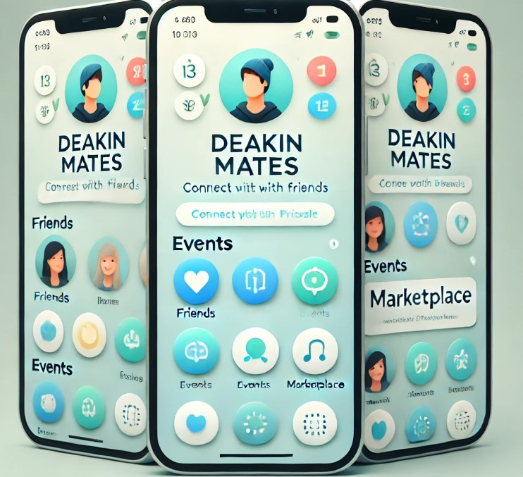

Your Ultimate Campus Companion
Ashish (s224637578)
s224637578@deakin.edu.au
Connect, Collaborate, and Thrive in the Deakin Community
DeakinMates is the all-in-one mobile app designed exclusively for Deakin University students. Enhance your campus life, build meaningful connections, and make the most of your university experience.
Download DeakinMates NowCreate your profile, showcase your interests, and connect with like-minded peers across all Deakin campuses.
Stay updated on campus events, workshops, and social gatherings. RSVP and add events to your calendar with just a tap.
Navigate Deakin campuses and Melbourne city with ease. Save favorite locations and find the quickest routes to your classes.
Buy, sell, or donate items within the verified Deakin community. Find textbooks, furniture, and more from fellow students.
Enjoy a safe and exclusive environment with our Deakin student verification system.
Create or join study groups for your courses, collaborate on projects, and share resources.
Access your class timetables and receive personalized course recommendations based on your interests.
Discover events and activities tailored to your interests and academic program.
"DeakinMates has completely changed how I experience university. I've made great friends and never miss out on campus events!"
- Sarah T., Business Student
"The study group feature is a game-changer. It's so easy to connect with classmates and collaborate on assignments."
- Michael L., Engineering Student
Yes, DeakinMates is completely free for all verified Deakin University students.
Simply sign up with your Deakin email address, and follow the verification process within the app.
Yes, Deakin alumni can access certain features of the app to stay connected with the Deakin community.
Join thousands of Deakin students already using DeakinMates to make the most of their university life.
Download DeakinMates Today